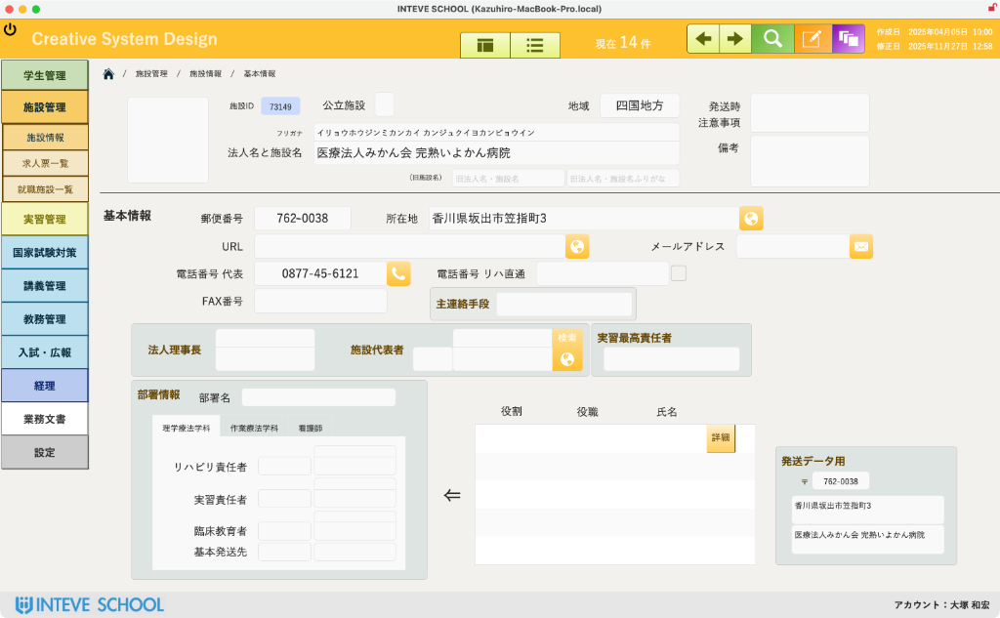
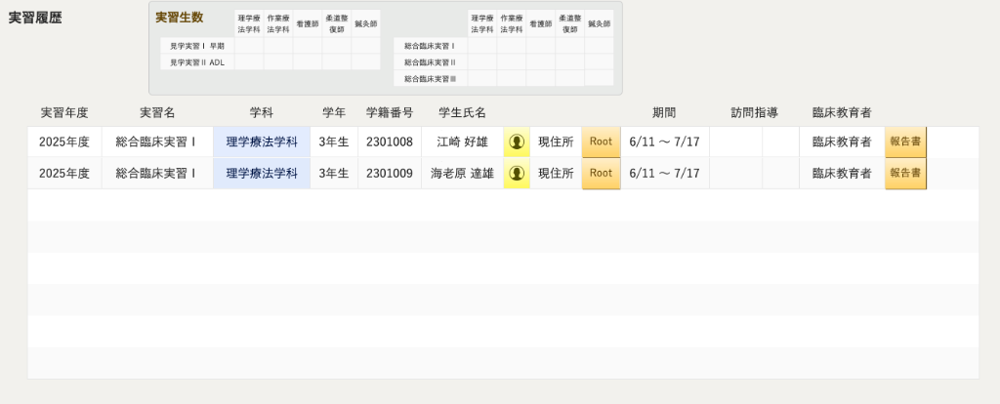
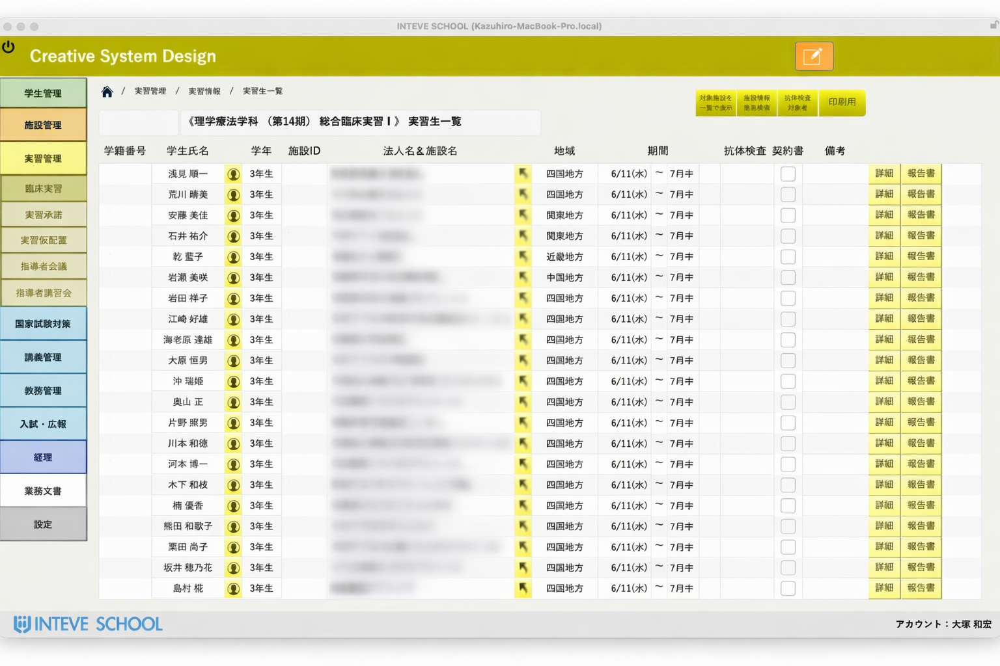
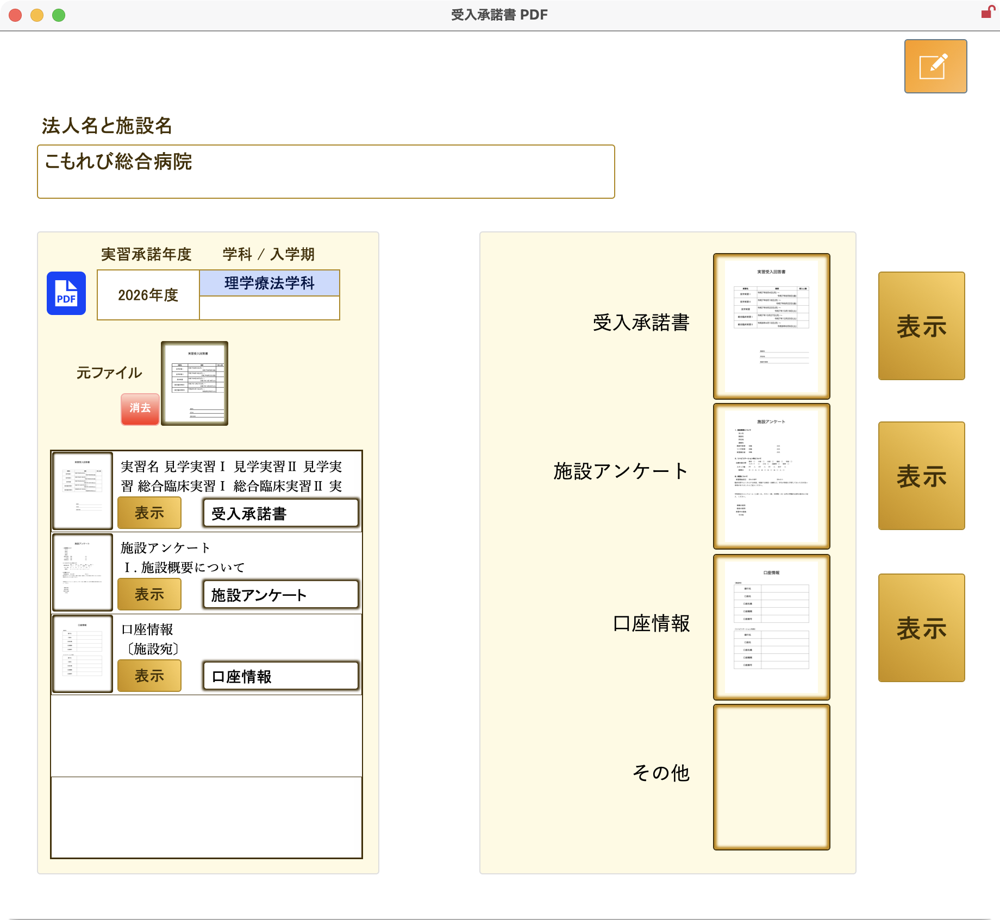
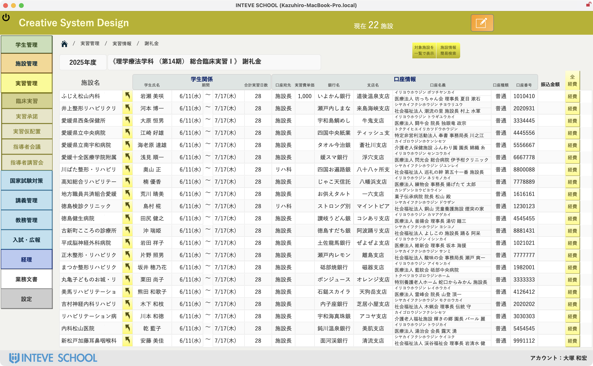
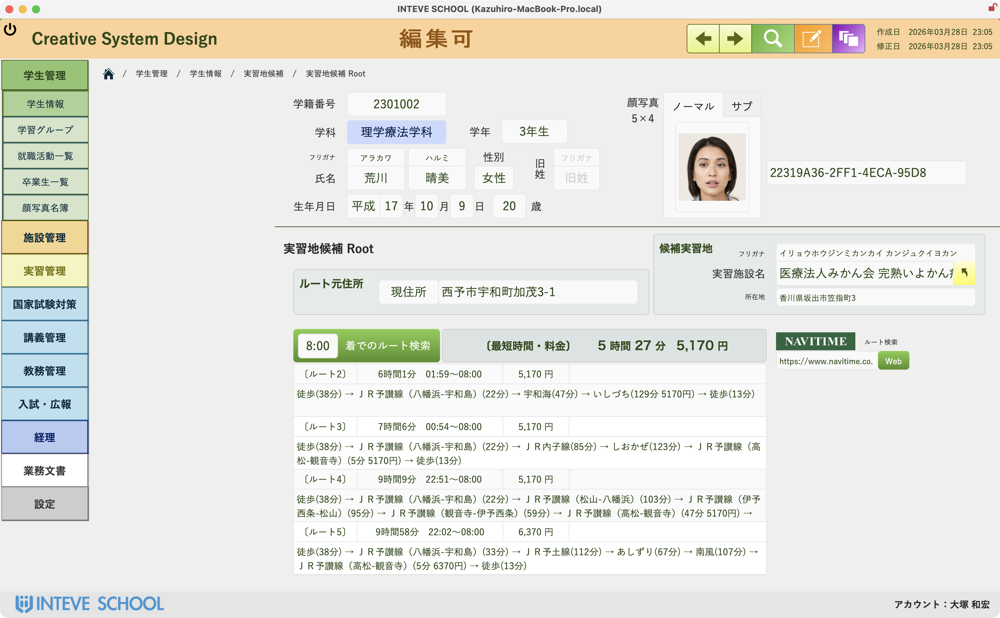

医療系養成校向け 臨床実習管理システム
「実習施設の見える化」
臨床実習に関わる膨大な情報を一元的に管理することで、煩雑な事務作業から解放され、教育本来の目的に注力できる環境を実現します。
病院、学生、卒業生をつなぐ情報プラットフォーム。
Core Features
創造的な“こと”に自分と時間を活かすための仕組みづくり
施設情報と履歴を一元管理
臨床実習施設の基本情報に加え、実習受入、実習生、卒業生の履歴、求人票情報を一箇所で把握し統合管理します。
臨床実習をスムーズに管理
実習受入依頼の文書発送から返信書類の管理、学生の配置、実習成績の入力まで、一連の業務をデジタル化し人的ミスを防ぎます。
指導者会議運営を円滑に
参加施設抽出に始まり、会議案内の発送、交通費・謝礼金の管理、領収書出力まで煩雑な会議の準備作業を効率化します。
講習会・説明会も効率管理
講習会と就職説明会について、案内発送から出欠確認、名簿作成、事後報告まで一連の業務を連携しスマートに運営します。
施設情報と連携履歴を一元管理
臨床実習施設の基本情報に加え、実習受入、実習生、卒業生の履歴、臨床実習指導者会議・講習会記録、求人票、就職説明会情報まで統合管理。
文書送付や施設との連絡履歴も記録できるため、関連情報を一箇所で把握し、効率的な実習運営を実現します。煩雑な情報管理から解放され、施設との連携をより円滑に進めることが可能です。




臨床実習をスムーズに管理
実習受入依頼の文書発送から返信書類の管理、実習施設の一覧表示、学生の配置、そして実習成績の入力まで、臨床実習に関わる一連の業務をデジタルに管理します。
煩雑な書類作業や情報共有の手間を削減し、人的ミスを防ぎます。さらに、対象施設を簡単に抽出できる機能により、会議の準備も効率化。教員の負担を軽減し、学生への指導に時間を割けるよう支援します。
進化する臨床実習を、INTEVE SCHOOLとともに。
INTEVE SCHOOLは、豊富な機能と柔軟なカスタマイズ性で、医療系養成校の臨床実習を強力にサポートします。各施設ならではの評価項目や運用フローに合わせた個別開発で、より効率的で質の高い実習管理体制を構築可能です。
FileMakerの柔軟性を活かしたオリジナルアプリが、業務効率化を強力に支援します。過去の経験を未来に活かし、質の高い臨床実習へと導く強力なツールです。

